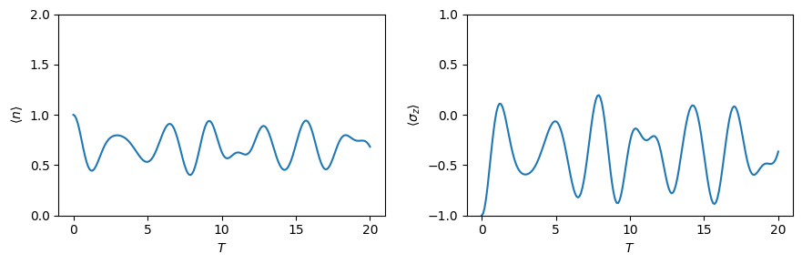
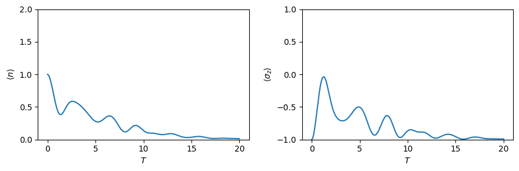

This notebook can be found on github
Jaynes-Cummings model
The Jaynes Cummings model is a famous theoretical model in the field of quantum optics. It describes a two level atom coupled to a quantized mode of a cavity.
$H = \omega_c a^\dagger a + \frac{\omega_a}{2} \sigma_z + \Omega (a \sigma_+ + a^\dagger \sigma_-)$
The first step is always to import the library
using QuantumOptics
using PyPlotThen we can define all the necessary parameters
# Parameters
N_cutoff = 10
ωc = 0.1
ωa = 0.1
Ω = 1.Describe the Fock Hilbert space and the Spin Hilbert space by choosing the appropriate bases
# Bases
b_fock = FockBasis(N_cutoff)
b_spin = SpinBasis(1//2)
b = b_fock ⊗ b_spinWith the help of these bases build up the Jaynes-Cummings Hamiltonian
# Fundamental operators
a = destroy(b_fock)
at = create(b_fock)
n = number(b_fock)
sm = sigmam(b_spin)
sp = sigmap(b_spin)
sz = sigmaz(b_spin)
# Hamiltonian
Hatom = ωa*sz/2
Hfield = ωc*n
Hint = Ω*(at⊗sm + a⊗sp)
H = one(b_fock)⊗Hatom + Hfield⊗one(b_spin) + HintThe time evolution of the system is governed by a Schroedinger equation.
# Initial state
α = 1.
Ψ0 = coherentstate(b_fock, α) ⊗ spindown(b_spin)
# Integration time
T = [0:0.1:20;]
# Schroedinger time evolution
tout, Ψt = timeevolution.schroedinger(T, Ψ0, H)The integration routine returns two objects - a vector containing points of time where output was generated (which will in most cases be the same as the given input time vector) and a vector containing the state of the quantum system at these points in time. These can further on be used to calculate expectation values.
exp_n = real(expect(n ⊗ one(b_spin), Ψt))
exp_sz = real(expect(one(b_fock) ⊗ sz, Ψt))Finally we can us matplotlib to visualize the the time evolution of the calculated expectation values
figure(figsize=(9,3))
subplot(1,2,1)
ylim([0, 2])
plot(T, exp_n);
xlabel(L"T")
ylabel(L"\langle n \rangle")
subplot(1,2,2)
ylim([-1, 1])
plot(T, exp_sz);
xlabel(L"T")
ylabel(L"\langle \sigma_z \rangle")
tight_layout()
Lossy Jaynes-Cummings model
The Jaynes-Cummings model can be expanded by giving the 2 level atom a finite spontenous decay rate $\gamma$. The system is then a open quantum system which is described by a master equation of the form
\[ \dot{\rho} = -\frac{i}{\hbar} \big[H,\rho\big] + \sum_i \big( J_i \rho J_i^\dagger - \frac{1}{2} J_i^\dagger J_i \rho - \frac{1}{2} \rho J_i^\dagger J_i \big) \]
where in this case there is only one jump operator $J=\sqrt{\gamma} \sigma_-$.
γ = 0.5
J = [sqrt(γ)*identityoperator(b_fock) ⊗ sm]# Master
tout, ρt = timeevolution.master(T, Ψ0, H, J)
exp_n_master = real(expect(n ⊗ one(b_spin), ρt))
exp_sz_master = real(expect(one(b_fock) ⊗ sz, ρt))
figure(figsize=(9,3))
subplot(1,2,1)
ylim([0, 2])
plot(T, exp_n_master);
xlabel(L"T")
ylabel(L"\langle n \rangle")
subplot(1,2,2)
ylim([-1, 1])
plot(T, exp_sz_master);
xlabel(L"T")
ylabel(L"\langle \sigma_z \rangle");
tight_layout()
Alternatively we can solve the system using the Monte Carlo wave function formalism. A single trajectory shows characteristic jumps in the expectation values.
# Monte Carlo wave function
tout, Ψt = timeevolution.mcwf(T, Ψ0, H, J; seed=2,
display_beforeevent=true,
display_afterevent=true)
exp_n_mcwf = real(expect(n ⊗ one(b_spin), Ψt))
exp_sz_mcwf = real(expect(one(b_fock) ⊗ sz, Ψt))
figure(figsize=(9,3))
subplot(1,2,1)
ylim([0, 2])
plot(tout, exp_n_mcwf)
xlabel(L"T")
ylabel(L"\langle n \rangle")
subplot(1,2,2)
ylim([-1, 1])
plot(tout, exp_sz_mcwf)
xlabel(L"T")
ylabel(L"\langle \sigma_z \rangle");
tight_layout()
For large number of trajectories the statistical average of the MCWF trajectories approaches the solution of the master equation.
Ntrajectories = 10
exp_n_average = zeros(Float64, length(T))
exp_sz_average = zeros(Float64, length(T))
for i = 1:Ntrajectories
t_tmp, ψ = timeevolution.mcwf(T, Ψ0, H, J; seed=i)
exp_n_average .+= real(expect(n ⊗ one(b_spin), ψ))
exp_sz_average .+= real(expect(one(b_fock) ⊗ sz, ψ))
end
exp_n_average ./= Ntrajectories
exp_sz_average ./= Ntrajectories
figure(figsize=(9,3))
subplot(1,2,1)
ylim([0, 2])
plot(T, exp_n_master)
plot(T, exp_n_average)
xlabel(L"T")
ylabel(L"\langle n \rangle")
subplot(1,2,2)
ylim([-1, 1])
plot(T, exp_sz_master)
plot(T, exp_sz_average)
xlabel(L"T")
ylabel(L"\langle \sigma_z \rangle");
tight_layout()